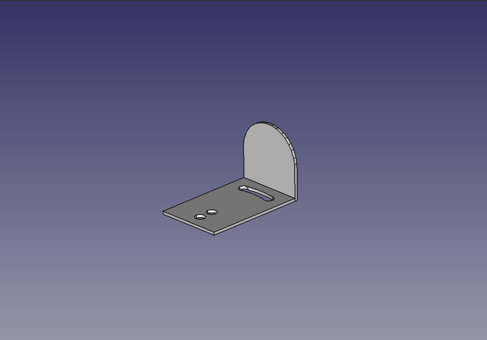
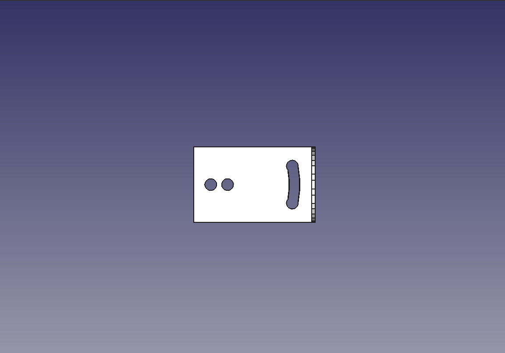
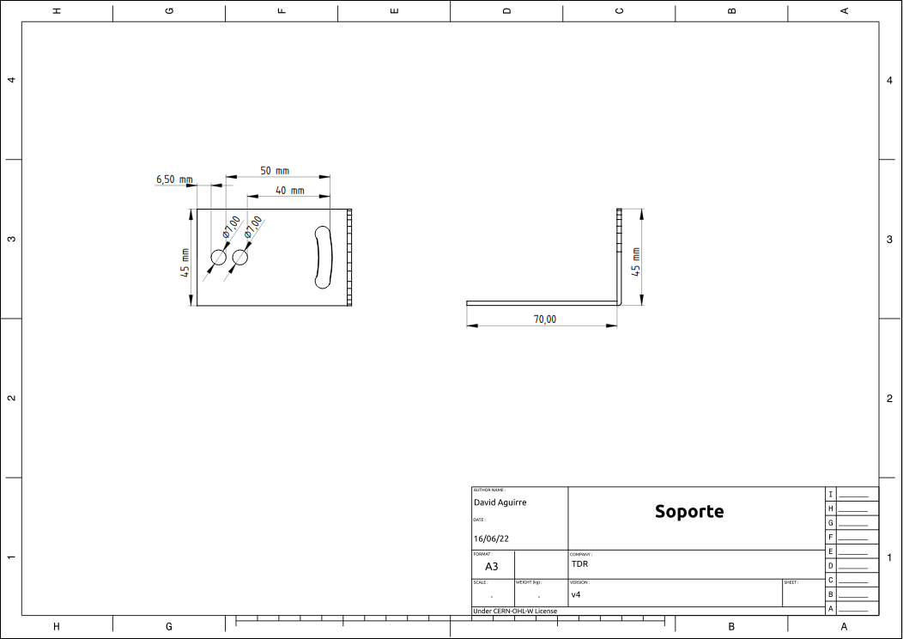

Diseño de soporte
Desarrollo del diseño del soporte
En la búsqueda para obtener un diseño de soporte, tuvimos en cuenta:
- Que sea liviano.
- La menor cantidad de material posible.
- Que tenga la versatilidad de poder adaptarse a caños más pequeños o más grandes.
- Que el material utilizado sea duradero y compatible con el material de la antena.
- Que sea fácil de reproducir.





This project was funded through the User-Operated Internet fund, a fund established by NLnet made possible by financial support from the PKT Community The Network Steward and stichting Technology Commons Trust
En cooperacion con AlterMundi.